Translico Transportes e Logística - ME
O melhor vai mais longe
SOBRE NÓS
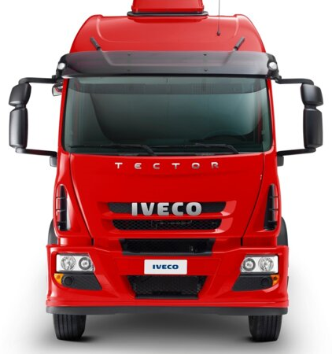A TransLico Transportes está no mercado á 10 anos. Nossa história começa quando o presidente Henrique Beliato era apenas um menino, cheio de sonhos e apaixonado por carros, caminhões e ônibus.
Esse amor pelos veículos veio através do seu avô Antônio, que desde pequeno levava Henrique para todos os lados, tanto de carro quanto na boleia de seus caminhões. Por seu o único neto homem naquela época, Sr° Antônio fazia de tudo para ensinar Henrique a dirigir desde cedo, mostrava todas as placas, informações importantes de trânsito, pegava estradas para curtir a vida junto com seu neto.
Com o passar do tempo, Henrique foi aprendendo tudo que era de mais importante e dirigia com o apoio do seu avô. A sensação era incrível, poder dirigir ao lado da pessoa que mais admirava e ensinava tanto sobre a vida.
Hoje, Sr° Antônio não está mais conosco, mais deixou um grande legado ao nosso presidente. Lico era o apelido que seu avô lhe chamava na infância, e Henrique fez essa homenagem a pessoa que mais apoiou e incentivou a realizar esse grande sonho.
FROTAS
CONHEÇA NOSSA FROTA DE VEÍCULOS
MOTOCICLETA
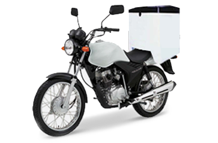A redução de tempo é a principal vantagem das entregas de moto. Nossos profissionais são altamente treinados para coletar e entregar seus documentos e pequenos pacotes com maior agilidade e segurança. Utilizado em serviços com até 20km de distância.
FURGÃO PEQUENO
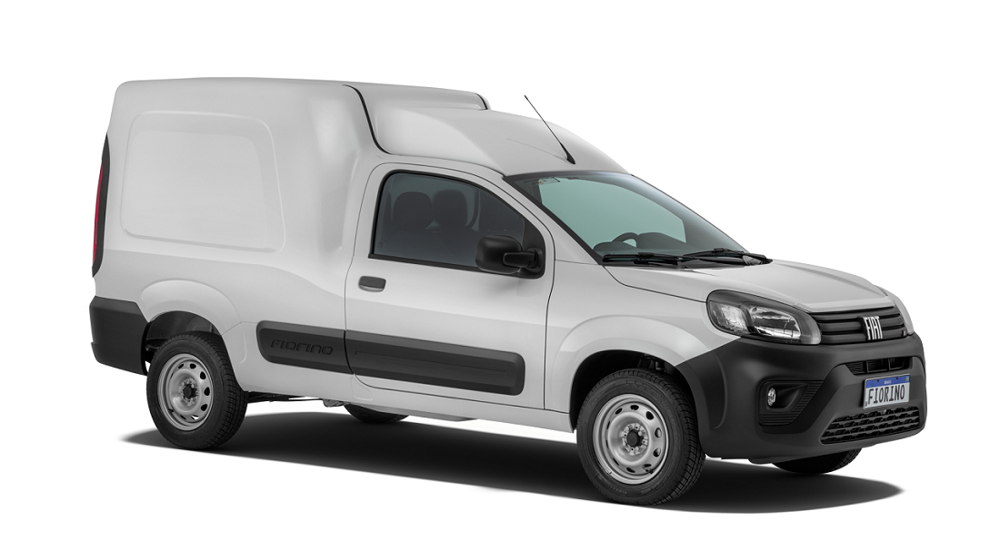Segurança e agilizade é a marca da nossa empresa. As entregas com nossos furgões pequenos ocorrem com distância máxima de 50km da cidade de São Paulo (Arujá, Barueri, Caieiras, Cajamar, Carapicuiba, Cotia, Embu, Poá, Ribeirão Pires, Itapevi, Mairiporã, Osasco, Vargem Grande Paulista), entre outras cidades.
FURGÃO MÉDIO
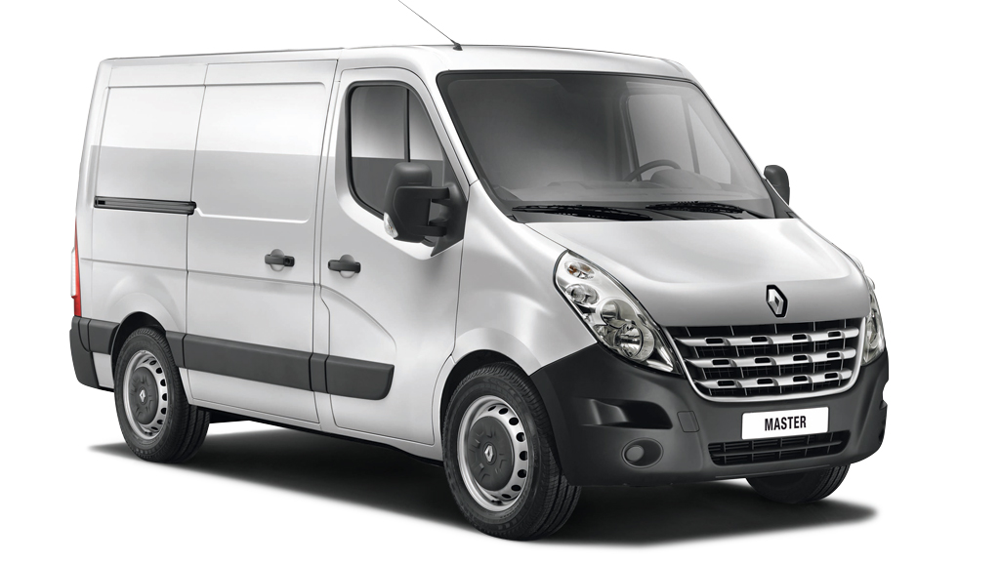Nossos furgões médios são preparados para qualquer terreno. Para essa categoria de veículo, as entregas ocorrem com distância máxima de até 70km da cidade de São Paulo (Araçariguama, Atibaia, Campo Limpo Paulista, Cubatão, Ibiúna, Mogi das Cruzes, Pirapora do Bom Jesus), entre outras cidades.
FURGÃO GRANDE
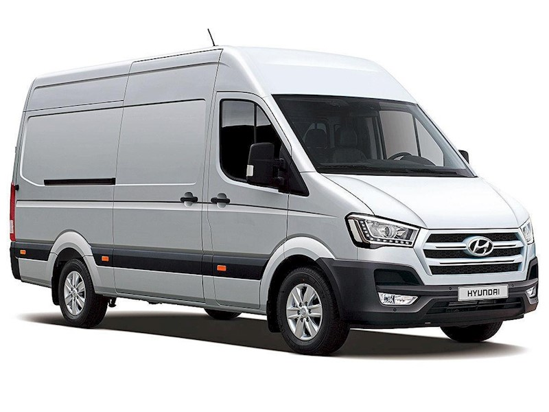Precisa de espaço para o transporte?. Para essa categoria de veículo, as entregas ocorrem com distância máxima de até 100km da cidade de São Paulo (Alumínio, Biritiba-Mirim, Bom Jesus dos Perdões, Cabreúva, Campinas, Guararema, Guarujá, Igaratá, Itatiba, Juquitiba, Mongaguá), entre outras cidades.
VUC COM BAÚ
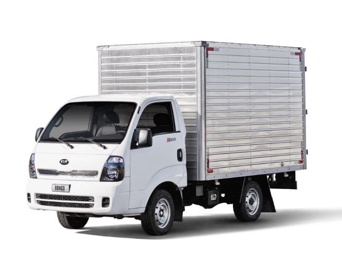O VUC é o menor dos caminhões e pode circular tanto em rodovias quanto pelos pelo perímetro urbano. Suas dimensões se restringem a 2,2 metros de largura por 6,3 metros de comprimento, sendo que a capacidade total de carga pode atingir 3 toneladas. Sua encomenda estará segura dentro do nosso VUC com baú.
VUC SEM BAÚ
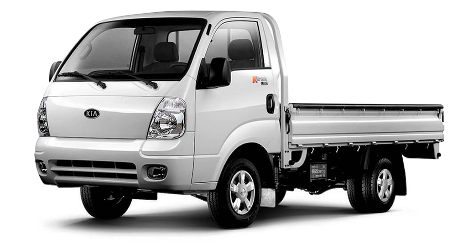O VUC sem baú tem as mesmas dimensões do que o modelo com baú, com seus 2,2 metros de largura e 6,3 metros de comprimento. Essa categoria foi feita para levar seus objetos mais altos e frágeis (como espelhos e vidros) e até mesmo muito utilizadas para carregar materiais de construção.
BAÚ TAMANHO "M"
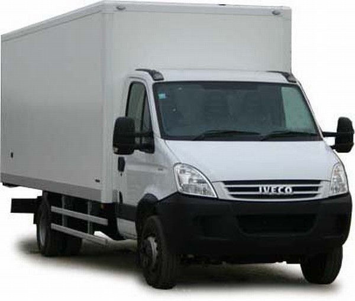Nossos caminhões tamanho "M", são revisados para qualquer tipo de terreno. Nessa categoria, suas encomendas chegam em cidades de até 150km de São Paulo (Bertioga, Artur Nogueira, Boituva, Caçapava, Capivari, Hortôlandia, Indaiatuba, Itanhaém, Jaguariúna, Joanópolis, Limeira, Monte Mor, Monteiro Lobato, Morungaba), entre outras cidades.
BAÚ TAMANHO "G"
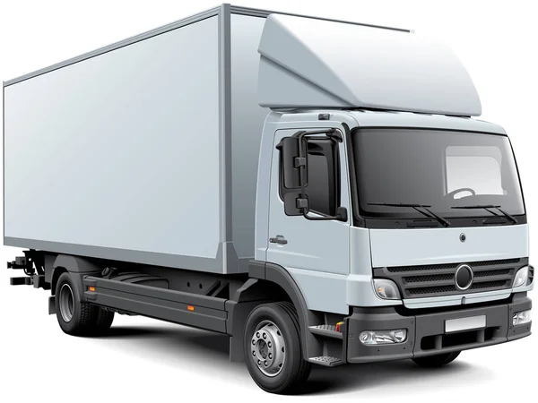Precisa de espaço para uma viagem mais distante?, temos o veículo certo para você. Nossos caminhões tamanho "G" são excelentes para transportar seus produtos com a maior segurança. Nessa categoria , suas encomendas chegam em cidades de até 200km de São Paulo (Águas de Lindoia, Águas de São Pedro, Aparecida, Campos do Jordão, Caraguatatuba, Lorena, Mogi Guaçu, Registro, Rio Claro, São Pedro, São Sebastião), entre outras cidades.
BAÚ TAMANHO "GG"
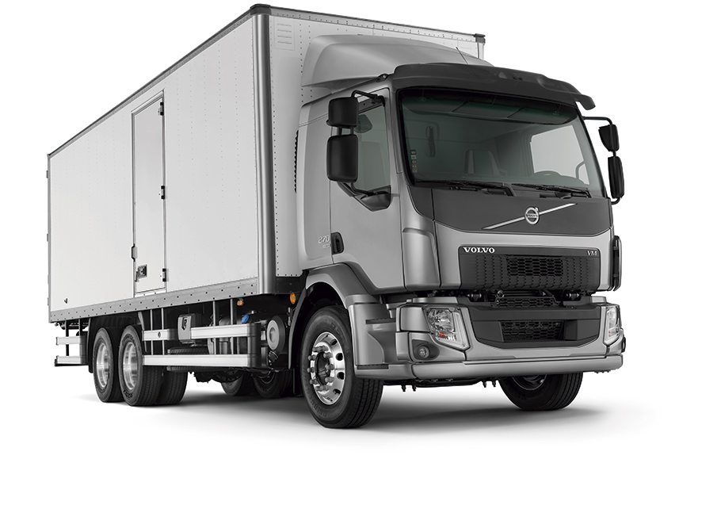Nossos caminhões tamanho "GG" possuem a estrutura que você tanto precisa. Fortes, espaçosos, ágeis, rápidos, leves, com certeza será uma ótima escolha. Para essa categoria, suas encomendas chegam em cidade de até 300km de São Paulo (Cruzeiro, Cunha, Dourado, Eldorado, Iaras, Ibaté, Ilha Bela, Leme, Lençóis Paulistas, Santa Rita do Passa Quatro, São João da Boa Vista), entre outras cidades.
CARRETA
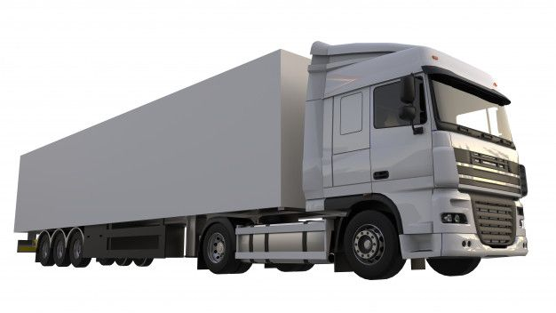Nossas carretas são as mais tecnológicas do mercado. Com sistema anti-furto e bloqueio com desvio de rota, nossos carros são equipados desde o ligar do veículo até do desengate antes do destino final. Já nessa categoria, as entregas são efetuadas em estados localizados em volta de São Paulo (Paraná, São Paulo, Rio de Janeiro, Mato Grosso do Sul).
RODOTREM
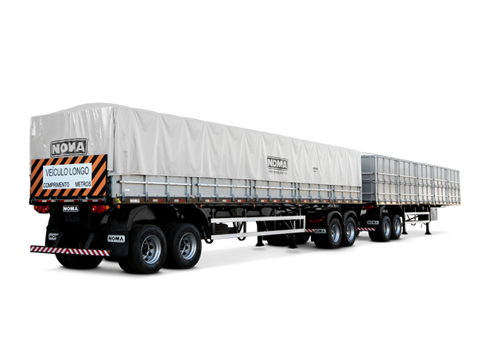Nossos rodotrens possuem as mesmas tecnologias de segurança, que também estão localizadas em nossas carretas simples. Sistema de anti-furto, bloqueio de desvio de rota, notificações ao ligar e desligar o veículo e até desengate da mercadoria antes do destino final. Deseja levar 2 cargas diferemtes?, então contrate nossos rodotrens. Essa categoria, as entregas são efetuadas em todos os estados do Brasil (Rio Grande do Sul, Santa Catarina, Paraná, São Paulo, Mato Grosso do Sul, Minas Gerais, Rio de Janeiro, Espirito Santo, Mato Grosso, Goiás, Destrito Federal, Bahia, Sergipe, Alagoas, Pernanbuco, Paraíba, Rio Grande do Norte, Ceará, Piauí, Maranhão, Tocantins, Pará, Amapá, Roraima, Amazonas, Rondônia, e Acre).
NOSSA LOCALIZAÇÃO

CONHEÇA NOSSAS INSTALAÇÕES
Avenida Marechal Tito, n° 1500
São Miguel Paulista, São Paulo-SP,
CEP: 08010-090
CONTATO
Entre em contato conosco para mais informações de
serviços:
° Rotas;
° Rastreios de carga;
° Localização de veiculos mais próximo de você;
° Valores;
° Contratos;
° Desvio de Rotas;
° Atraso na entrega;
Entre esses e outros assuntos, nos acione em nossos canais:
E-mail: contato@translico.com.br
Telefone: (011) 2222-2221